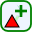

The gazetteer application is started by either running from the Plugin menu (Plugins | Gazetteer editor | Open the gazetteer editor) or by clicking the gazetteer icon.
This will open the Gazetteer editor window and add the gazetteer map layers to the map. The editor window is a dockable window - it can be dragged off the main QGIS window.
The gazetteer application uses 8 layers in two groups - one for the currently selected feature, and one for the current search results
In each group are four layers
You can find names by entering the name into the the search box (on the search tab of the editor) and clicking the search button. Names will be found that contain every complete word in the search string. Diacritical marks and case (upper/lower case) are ignored in matching words. There are a couple of useful shortcuts in searching for names:
The search box also has a button to switch to "advanced" search mode. In this mode you can restrict the search in a number of ways..
You can also used the advanced search box to increase the maximum number of names that can be returned.
If too many names match the search criteria then you will get an error message "Query not specific enough". You can make the search more specific to reduce the number of matches, or use the advanced search option to increase the maximum permitted.
Once a name is found you can click the name in the results list to see all of its details. The matched names are also displayed on the map, and you can use the identify search tool to select a name to display from the map. Start the identify search tool by clicking . Then hover over a search result on the map to see its name displayed in the status bar on the bottom of the map window, or click it to view its details.
Normally when you click a name in the list its details will replace those of the last name viewed. However you can display the name in a new window by holding down the shift key when clicking.
Note that if you delete a name (set its status to deleted), then the only way to find it is to enter its id into the search box, or to use the advanced search setting the name status to deleted.
The search tab itself has two other tabs, Recent and Favourites. Use Recent to find names that you have edited or viewed recently, and favourites to view names that you have tagged as favourites (see Editing names below). The Recent tab provides options for "Any user", to look at names that any user has viewed or edited recently, and "Edited only", to restrict the list to names that have been edited.
The details of a name are displayed in a window by clicking a name in the search results or clicking a search result on the map. The name details window can be dragged off (undocked from) the search window, and several names detail can be viewed at once.
If the feature to which the name refers has other names, then you can click their links to view their details.
At the top of the name details list are two numbers - the name and feature id which are generally not useful (!), an Edit button, and a start. Click the star to add the name to your favourites list if you are going to want to see it again (and click it again to remove it).
When you click the edit button you put the name into "edit mode". Here you can edit all details of the name and feature, and add new events, annotations, and associated names.
To edit an item click its the corresponding "edit" link, and then make the required changes. Click the save button at the top to save the changes, or the Cancel button to undo all changes to the name.
Note that to associate a name with another name (which is not a name for teh same feature), you must first open the other name in a name window (ie search for it and click the result). You can then select that name in the "Create new assocation" window"
You can create a new name for an existing feature by editing one of the existing names, cliccking the "create new name for this feature" link, and entering the name. After you have saved the chagnes, you can click on the link for the new name to open it, and do any other edits required
To create a completely new feature click the  icon, then click the map at the location of the reference point for the new feature. You will be prompted for the name of the feature, and the feature class/type. Select these and click Ok to create the new feature and name.
Once you have created the new name you can then edit its details. Initially the name is created with a status of "New name". While it is in this status you can change the name. Once you set its status to any other value (official or unofficial), then the name can no longer be edited. Names with status "New name" will not be published to the web or LINZ data service.
Note that you must define the "process" associated with a name before you can change the status to anything other than New or Deleted.
To delete a name, go into edit mode and set its status to "Deleted name". It will then not published, and will not show in the administration application unless you explicitely search for deleted names.
To edit a feature you must first select it so that it is shown in the "gazetteer feature" layers on the map. You can then select one of the layers (refpoint, point, line, polygon) to edit or create spatial objects in that layer. After making spatial edits, click the icon to save the changes, or to cancel them.
| Add a new point line or polygon to the feature. First select the point, line, or polygon layer, then click the icon, then digitize features onto the map. Just click the map (with the left button) to create a point. To create a line or polygon click a series of points, and then click with the right button to complete the feature. | |
| Import geometries selected in other layers into the feature. To use this first select features in another layer using the Quantum feature selection tools, then click this button to add them to this feature. | |
| Delete geometries from the feature. To use this, select the geometries of the feature in the point/line, or polygon layers with the Quantum feature selection tools, then click this button to remove them from the feature. | |
| Shift a point, line, polygon or the reference point. Select the layer of the geometry that you want to move, then click this icon. You can then drag features around. | |
| Shift the nodes of a line or polygon. Select the layer of the geometries that you want to edit, click this tool. Click a geometry to start editing it, then drag nodes around to where you want them to be. |
Periodically the gazetteer data used by the web application and LINZ data service needs to be updated, in order to publish new names. Note that some names are not published. Any name with a status of "New name" or "Deleted name" is not published. Also any name with a "Not published" annotation of either the name or the feature it refers to will not be published. You can check which names are not published using the advanced search options.
To publish data to the web database and LINZ data service (not yet implemented) open the Administration function dialog, accessed from the menu. Only gazetteer administrators can use these functions. This opens the administration dialog.
Open the "Publish gazetteer data" tab and click the "Publish data" button, to start the update. The update may take several minutes to run. During this time the online application may not be able to access the data.
The gazetteer application can only be used by registered users. Users are either normal users, or administrators. Administrators can publish data, add and remove users, and update lists such as feature type and name status lists.
All users must have LINZ logins - they are identified by their network login in the gazetteer database.
To add new users or change users from normal to adminstrator groups use the Administration dialog, accessed from the menu. Only gazetteer administrators can use these functions. This opens the administration dialog.
Select the "Users" tab. This will display a list of users.
To add a new user, click enter their network userid in the User name box and click the "Add" button.
To remove a user, select them from the drop down list and click the "Remove" button.
To grant or revoke a users administator status, select the user, set or clear the "Admin userK" check box, and then click the "Update" button.
Note that you cannot change any settings for yourself!
Updating system codes should generally be done with great care! This function is only available to administrators, and updating some system codes can stop the application operating correctly
Changes that can be achieved using system codes are:
The gazetteer application is installed from the LINZ Customer services plugin repository. The plugin is installed using the menu item.
If the plugin is already installed, but is not showing then it may need to be enabled. Use the menu item to open the plugins dialog, and click the checkbox for the Gazetteer editor plugin.
Some guidance on system maintenance is avaiable in developer notes.